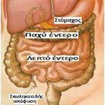
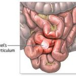
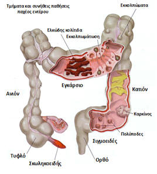
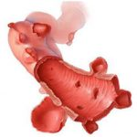
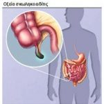
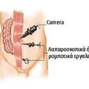

Το λεπτό έντερο υποδέχεται τις τροφές από το στόμαχο και κατόπιν τις μεταφέρει στο παχύ έντερο ( ή αλλιώς κόλον), από την τελική μοίρα του οποίου αποβάλλεται το υπόλειμμά τους. Στο όριο της μετάπτωσης του λεπτού στο παχύ έντερο βρίσκεται η σκωληκοειδής απόφυση. Το λεπτό έντερο διαδραματίζει σημαντικό ρόλο στην απορρόφηση των περισσότερων θρεπτικών συστατικών των τροφών, όπως των πρωτεϊνών, των λιπών και των σακχάρων, ενώ συμβάλει ποικιλοτρόπως και στην απορρόφηση των βιταμινών. Αντίθετα, το παχύ έντερο ευθύνεται για την κύρια απορρόφηση του νερού από τις τροφές, ενώ συμπυκνώνει και αποθηκεύει προσωρινά το υπόλειμμα τους, έως ότου αυτό αποβληθεί με τις κενώσεις.
Λεπτό έντερο

Οι χειρουργικές παθήσεις του λεπτού εντέρου είναι αναλογικά κατά πολύ σπανιότερες από αυτές του παχέος. Οι συχνότερες καλοήθεις παθήσεις αφορούν την ύπαρξη φλεγμαίνουσας μεκελείου απόφυσης (που προκαλεί παρόμοια εικόνα με την οξεία σκωληκοειδίτιδα), τις περιπτώσεις εσωτερικών ή και τοιχωματικών κηλών (που προκαλούν απόφραξη και ειλεό), τους διάφορους καλοήθεις όγκους (που είναι σπάνιοι) και τις φλεγμονώδεις νόσους του εντέρου, όπως η νόσος του Crohn.
Οι κακοήθεις παθήσεις του λεπτού εντέρου είναι σχετικά σπάνιες και αφορούν σπάνιες μορφές εντερικών καρκινωμάτων. Το σύνολο των προαναφερόμενων παθήσεων αντιμετωπίζεται με λαπαροσκοπικές και ρομποτικές τεχνικές, προσφέροντας ιδιαίτερα αποτελεσματικές, αλλά και ελάχιστα παρεμβατικές χειρουργικές θεραπευτικές προσεγγίσεις.
Παχύ έντερο

Οι χειρουργικές παθήσεις του παχέος εντέρου είναι κατά πολύ σε συχνότερες από αυτές του λεπτού εντέρου. Υπολογίζεται πως στις δυτικές χώρες ο καρκίνος του παχέος εντέρου αποτελεί τον τρίτο συχνότερο καρκίνο και ευθύνεται για μεγάλο αριθμό θανάτων ετησίως. Εκτός αυτού όμως, στο παχύ έντερο εμφανίζονται και πολυάριθμες καλοήθεις παθήσεις που απαιτούν χειρουργική αντιμετώπιση, όπως για παράδειγμα οι πολύποδες, τα εκκολπώματα, καθώς και διάφορες φλεγμονώδεις παθήσεις. Πολύτιμο διαγνωστικό εργαλείο για τις παθήσεις του παχέος εντέρου αποτελεί η κολοσκόπηση, ενώ σημαντικά συνεισφέρουν η αξονική και μαγνητική τομογραφία.
Παράγοντες που σχετίζονται με τη συχνότητα εμφάνισης του καρκίνου του παχέος εντέρου είναι η κατανάλωση μεγάλης ποσότητας κόκκινου κρέατος και κορεσμένων λιπών – έναντι των φυτικών ινών, η κληρονομικότητα, το κάπνισμα, το ιστορικό καρκίνου των ωοθηκών – ενδομητρίου – μαστού στις γυναίκες, οι φλεγμονώδεις νόσοι του εντέρου όπως η ελκώδης κολίτιδα και η ύπαρξη ενός ή και περισσοτέρων πολυπόδων. Η θεραπεία του καρκίνου του παχέος εντέρου είναι χειρουργική. Για την αφαίρεση των νεοπλασμάτων αυτών (κολεκτομή), ανεξαρτήτως σε ποιο τμήμα εντοπίζονται, χρησιμοποιούνται τόσο η λαπαροσκοπική, όσο και η ρομποτική χειρουργική. Η ανάγκη διενέργειας ανοικτών χειρουργικών επεμβάσεων έχει μειωθεί δραματικά και επιφυλάσσεται ουσιαστικά στα προχωρημένα ή και μεταστατικά νεοπλάσματα.

Συχνή καλοήθης πάθηση του παχέος εντέρου είναι η εκκολπωματική νόσος. Τα εκκολπώματα είναι μικρές προεκβολές του εντερικού βλεννογόνου διαμέσων του μυϊκού τοιχώματος του εντέρου, δημιουργώντας κατ΄ αυτόν τον τρόπο ευαίσθητες θέσεις, που μπορούν ανά πάσα στιγμή να ραγούν. Εμφανίζονται κυρίως σε μεγαλύτερες ηλικίες, ενώ σχετίζονται με τη δυσκοιλιότητα και τη χαμηλή κατανάλωση φυτικών ινών. Συνοδεύονται από κοιλιακό άλγος, καθώς και από βλεννοαιματηρές κενώσεις, ενώ σε οξεία φλεγμονή ή ρήξη τους προκαλείται περιτονίτιδα.
Η ίδια ελάχιστα επεμβατική χειρουργική τακτική ακολουθείται και στις καλοήθεις παθήσεις του παχέος εντέρου, προσφέροντας κατ΄ αυτόν τον τρόπο συνολικά την πιο σύγχρονη χειρουργική αντιμετώπιση των παθήσεων του παχέος εντέρου.
Σκωληκοειδής απόφυση

Η σκωληκοειδής απόφυση είναι ένα εμβρυϊκό υπόλειμμα, που βρίσκεται στη αρχή του παχέος εντέρου, αμέσως μετά τη μετάπτωση του λεπτού σε αυτό. Σε νεαρή ηλικία είναι πλούσια σε λεμφικό ιστό, συντελώντας στην άμυνα του οργανισμού. Οξεία σκωληκοειδίτιδα ονομάζεται η φλεγμονή της απόφυσης αυτής, που συνήθως προκαλείται από την απόφραξη του αυλού της. Αυτό ενδέχεται να οφείλεται σε κάποιους μηχανικούς λόγους (απόφραξη από κόπρανα, στερεά τροφικά υπολείμματα), ή σε κάποια φλεγμονή (ιογενείς λοιμώξεις, εντεροκολίτιδα), αλλά και σπανιότερα σε νεοπλάσματα αυτής (καρκινοειδές).
Εκδηλώνεται αρχικά με ήπιο πόνο στην περιοχή του ομφαλού, μαζί με γαστρεντερικές διαταραχές (έμετο ή διάρροια), πυρετό, δυσφορία και ανορεξία. Αργότερα ο πόνος εντείνεται και εντοπίζεται χαμηλότερα στη δεξιά λαγόνιο περιοχή, ενώ πολλές φορές επιδεινώνεται με τις κινήσεις και το βήχα. Η φλεγμονή που δημιουργείται μπορεί να προκαλέσει οίδημα ή ακόμη και ρήξη του τοιχώματος της απόφυσης, με αποτέλεσμα την έξοδο του περιεχομένου της (κόπρανα) στην κοιλιά και επακόλουθο την επικίνδυνη για τη ζωή του ασθενούς περιτονίτιδα.

Αυτός είναι και ο λόγος για τον οποίο ο ασθενής πρέπει να υποβληθεί άμεσα σε χειρουργική επέμβαση και αφαίρεση της σκωληκοειδούς. Η οξεία σκωληκοειδίτιδα είναι η πιο γνωστή και συχνή πάθηση που απαιτεί χειρουργική επέμβαση στην εφηβική και γενικά στη νεαρή ηλικία. Η χειρουργική αντιμετώπιση γίνεται πλέον σχεδόν αποκλειστικά λαπαροσκοπικά και ρομποτικά. Η μετατροπή της επέμβασης σε ανοικτή είναι σπάνια και κυμαίνεται σε ποσοστά κάτω του 1% όταν διενεργείται από έμπειρες χειρουργικές ομάδες.